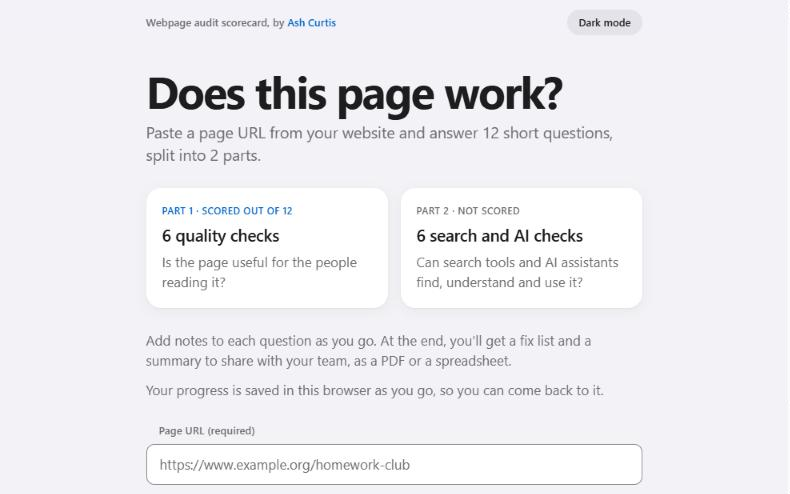

Webpage audit scorecard
A free tool that checks whether a page works for readers, search and AI tools

FromA content audit checklist
ToA step-by-step tool anyone can run on a page
The problem
After a really interesting content audit we did at Parkinson’s UK recently (and stumbling on Louise de Sadeleer’s marketer/GitHub advice after some late-night doomscrolling on Insta), I’ve been feeling motivated to build something useful.
My approach
Using ideas from the content audit, as well as principles from a presentation on SEO/AEO I was going to host for internal staff, I’ve created a quick tool for non-techy people to check how helpful a single webpage might be on their website. It helps you check whether the page works for the people reading it, and whether search engines and AI tools can find and use it. And you get a score at the end, so you can measure it against other pages in your audit.
The outcome
It still needs your expertise and guidance – you’re the subject matter expert, after all – but it’s a step in the right direction for those who don’t know where to start.
And it’s totally free.